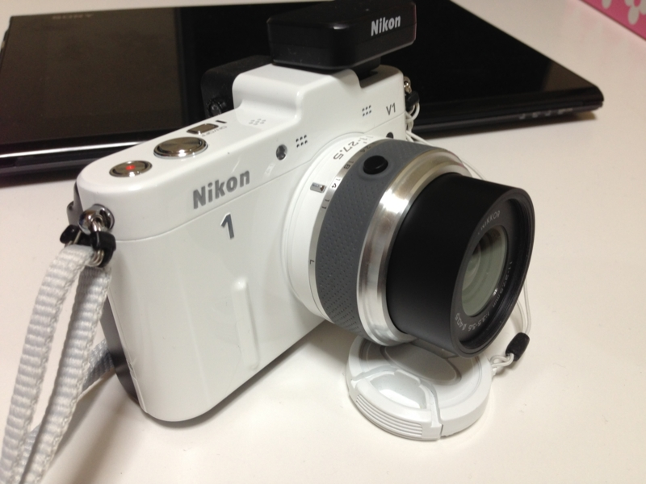
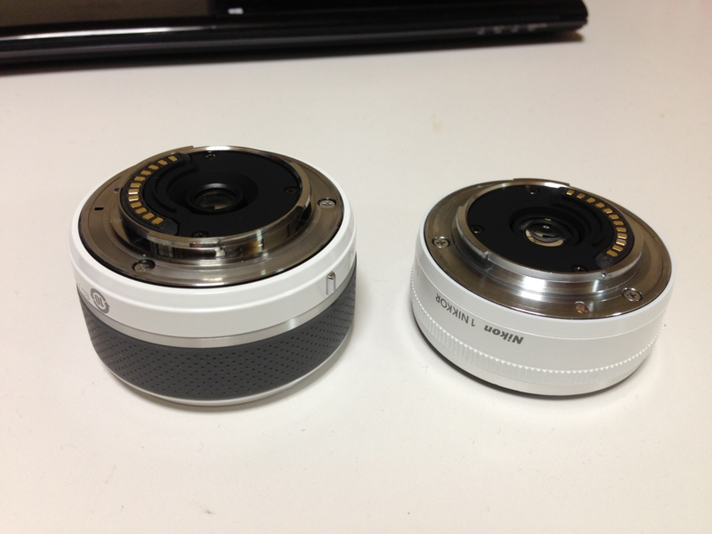
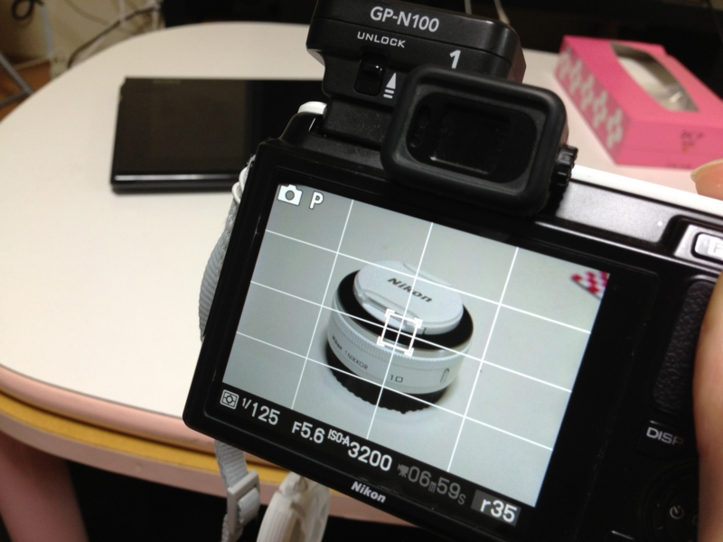

Nikon 1 NIKKOR 11-27.5 f/3.5-5.6 を買ってみたった。
公開日：

Nikon 標準ズームレンズ 1 NIKKOR 11-27.5mm f/3.5-5.6 ブラック ニコンCXフォーマット専用
- 出版社/メーカー: ニコン
- 発売日: 2012/09/06
- メディア: エレクトロニクス
- クリック: 2回
- この商品を含むブログを見る
Nikon D300s のサブ機として活躍中の Nikon 1 V1 なのだけど、レンズは Nikon 単焦点レンズ 1 NIKKOR 10mm f/2.8 ブラック ニコンCXフォーマット専用 しかもっておらず*1。ひとりでポテポテ散歩するときにはこれで十分なのだけど、勉強会の撮影をしようと思うと、単焦点なのが少しツラい。そこで、この前、愛媛・松山へ勉強会へ行くとき、2万円弱で買える 11-27.5mm のレンズを買ってみたった。

35mm判換算で 30-75mm の画角は、小規模の会議室で使い勝手がよい。そして何よりコンパクト！

単焦点レンズと大きさを比べてみた（左が 11-27.5mm、右が 10mm）。タッパがそれほど変わらないので、これまで使っていたポーチにもすんなり入る。画質の良し悪しはわしにはわからんのだけど、少なくとも不満に感じることはなかった。VR（手ぶれ補正）はないけれど、それもとくに困らず。明るくバシッと撮れる感じ。

それにしても、Nikon 1 V2 がほしくなってきた（ｳｽﾞｳｽﾞ
*1:一眼レフ用のレンズを付けられるアダプターはもってるけど